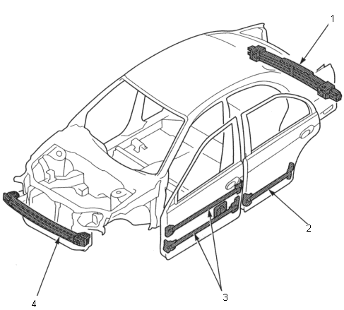

General Information
|
1-10 |
Door and bumper reinforcement beams used on Honda vehicles are made from a metal equivalent to High Strength Steel.
If High Strength Steel is heated, the strength of the steel will b e reduced. If High Strength Steel is damaged, as in a vehicle accident, where the door and bumper reinforcement beams are bent, the beams may crack if an attempt is made to straighten them.
For this reason, the door and bumper reinforcement beams should NEVER be repaired; they should be replaced if they are damaged.
NOTE: If a door beam is damaged, the whole door panel assembly should be replaced.
 |
|